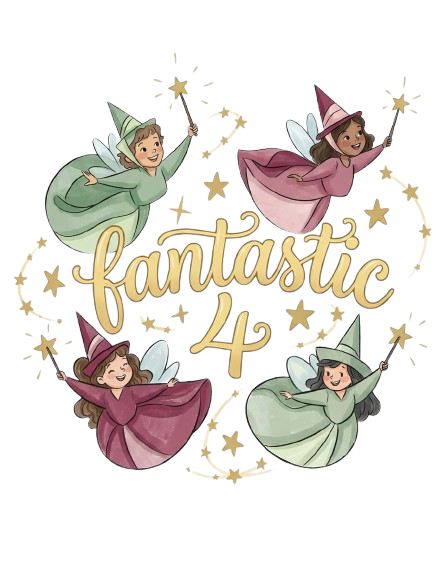

Logo Fantastic 4 menggambarkan empat peri dengan karakter dan keahlian berbeda yang bersatu dalam satu visi. Posisi melingkar melambangkan kerja sama tim yang solid dan saling melengkapi. Perpaduan warna hijau (Brook Green), merah muda (Thulian Pink), dan ungu (Amaranth) melambangkan pertumbuhan, kreativitas, empati, dan kehangatan. Sementara itu, tongkat sihir berbentuk bintang melambangkan potensi untuk meraih impian, dan taburan bintang melingkar menggambarkan perjalanan bersama yang penuh harapan serta membawa dampak positif.